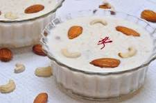
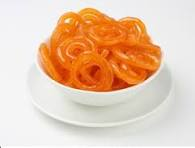

Kheer
Rich and creamy rice pudding flavored with cardamom and saffron.

Jalebi
Sweet, crispy spiral-shaped dessert soaked in sugar syrup.
Rich and creamy rice pudding flavored with cardamom and saffron.
Sweet, crispy spiral-shaped dessert soaked in sugar syrup.